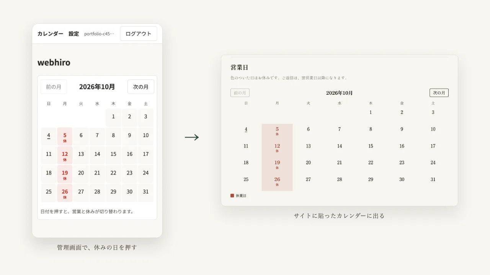
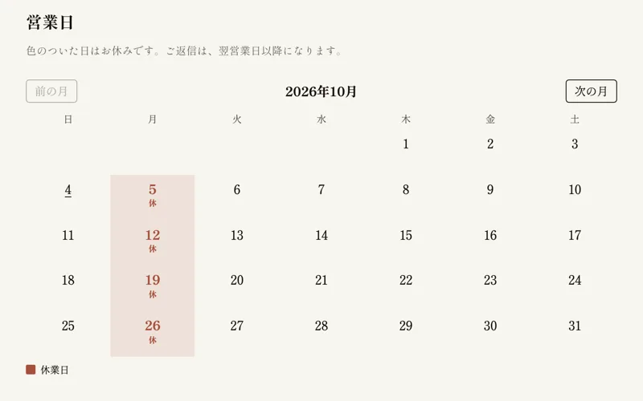

Case Study — Web App
Frontsign営業日カレンダー
店やスタジオの休みを、サイトの持ち主が自分で更新できる営業日カレンダーです。管理画面で日付を押すと、サイトに貼った2行のタグに反映されます。受注した案件ではなく、自分で企画した Web アプリで、このサイトのお問い合わせページで実際に使っています。
動いている様子を見る
Problem
課題
HTML で作った静的なサイトでは、休みの日を1つ変えるだけでも、ファイルを書き換えてアップし直す必要があります。制作者には簡単でも、サイトの持ち主にはできません。
- 臨時休業や振替営業を、サイトの持ち主が自分で直せない
- 直すたびに制作者への依頼が発生し、反映までに時間がかかる
- 汎用のカレンダーを埋め込むと、書体や色がサイトと揃わない
Approach
アプローチ
管理画面では、定休の曜日を選び、あとはカレンダーの日付を押すだけで、営業と休みが切り替わります。サイト側は、貼られたページの書体と文字色を引き継ぎつつ、スタイルが互いに干渉しない仕組み（Shadow DOM）で描いています。このサイトのお問い合わせページでは、追加の指定なしで明朝体になっています。
ログインにはパスワードを使わず、メールで届くリンクを使います。公開前にコードレビューを7回くり返し、他人のメールアドレスでアカウントを先取りする手口など、見つかった指摘をすべて直しました。動作は、141件の自動テストで確かめています。実装は、AI のコーディング支援（Claude Code）を使って進めました。

Result
成果
このサイトのお問い合わせページで、実際に動いています。休みを入れたいときは、管理画面で日付を押すだけで、1分以内にページへ反映されます。公開して間もないため、自分以外の利用者はまだいません。まずは自分のサイトで使い続けて、使い勝手を確かめていきます。